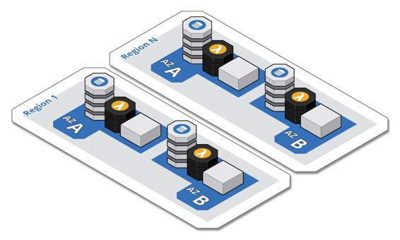

Regions and availability zones
The cloud has been in the news recently with a first-class disruption that impacted a large swath of well-known sites. I tell my clients that they should expect these large disruptions about every one and half to two years, and this latest disruption was right on cue. Of course, naysayers used this as an opportunity to bash the cloud, but other cloud providers did not use it as an opportunity to one up each other, because they know that it's only a matter of time before the same will happen to their services as well. Yet all the while some companies were prepared and only experienced a minor blip in availability, while others experienced protracted outages.
As depicted in the following diagram, every cloud provider divides its offering into geographic regions, which in turn consist of two or more availability zones (AZ). Each availability zone is an independent data center with high-speed communication between all the availability zones in the region. AZs act as bulkheads within a region. For any resource clusters that you will be managing yourself, you will be deploying them across multiple availability zones for redundancy to help ensure your components stay available when there is an interruption in a specific AZ. Any value-added cloud services that you leverage, such as cloud-native databases and function-as-a-service, are already deployed across multiple AZs, which frees you from that responsibility.

Regions act as a bulkhead within a cloud provider. The disruption mentioned earlier was limited to a specific region, because regions are designed to contain failures. The companies that only experienced a blip in availability had at least their critical workloads deployed in multiple regions. Their blip in availability lasted only as long as it took their regional routing rules to failover to the still available regions. In Chapter 6, Deployment, we will cover considerations for regional deployments.
Many, if not most, companies fail to take advantage of multi-regional deployments for a variety of reasons. Many just don't heed the warnings. This is often just a lack of experience, but it is usually because the value is not perceived to be worth the extra effort. I certainly concede this latter point if the objective is just to run an active-passive, multi-regional deployment. The cost of running duplicate resources just in standby mode is not attractive. Running an active-active, multi-regional deployment is much more palatable, because you can spread your load across the regions and give your regional users a lower latency experience. You may even have regulations that require you to store and access user data within regions in specific countries.
Of course running active-active is not without its challenges. It is fair to say that the value may still not be worth the effort, if you are running all your clusters yourself and particularly your own database clusters. However, this is not necessarily the case if you are leveraging value-added cloud services, such as cloud-native databases and function-as-a-service. These services have already made AZs transparent and freed you of the burden of scaling them across AZs. Thus, you can redirect that effort to multi-regional deployments. Plus, provisioning these services to multiple regions is becoming more and more turnkey. Expect cloud providers to be competing on this feature. The bottom line is that mature, cloud-native systems are multi-regional.